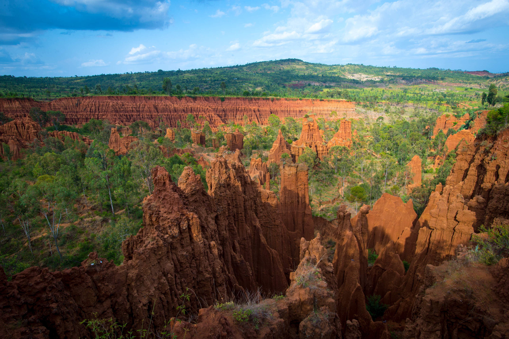
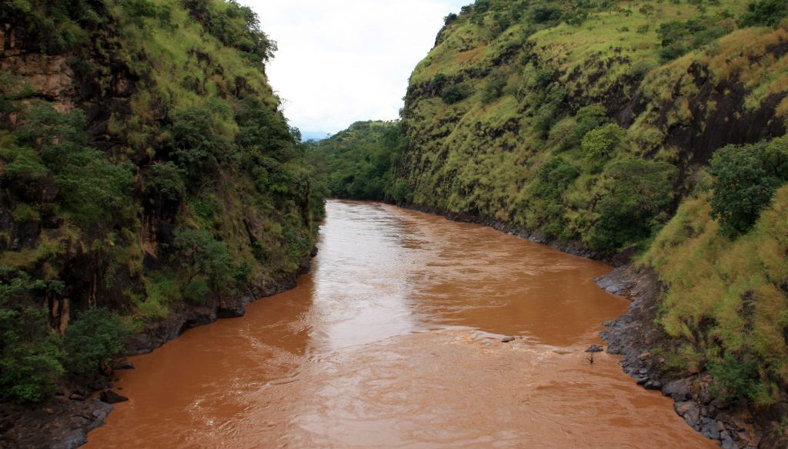

Konso Cultural Landscape
This is another cultural site on the list of UNESCO World Heritage Sites in Ethiopia. It is an arid property of stone-walled terraces and fortified
settlements. This cultural tradition has been around for over 21 generations (over 400 years) in Ethiopia. It is an excellent example of how the
settlements and the humans living in the region adapted to the dry and hostile environment in the Konso highlands. Within the site, you will also
find wooden statues that were put up to honor key members of the community. In fact, they have innovated the use of stone steles that indicate
the passing of important leaders of the community.

Fasil Ghebbi, Gondar Region
This property included in the list of UNESCO World Heritage Sites in Ethiopia consists of eight component sites. The main site is the Fasil
Ghebbi palace compound. Meanwhile, the other seven sites are located within the city of Gondar. These sites include a monastery, church, thermal
area, bath, and a palace. Gondar was established as the capital of Ethiopia by King Fasil during the 17th century. By the 18th century, the site
was transformed from a camp into a fortified compound.

Lower Valley of the Omo
This prehistoric site at the lower valley of the Omo is famous all over the world. Several fossil remains were discovered on this site near
Lake Turkana. The most notable fossil discovered here is the Homo gracilis. It was fundamental in the study of human history and evolution.
Included in this site is Fejej and Konso paleontological research sites wherein there are sedimentary deposits found that researchers trace
back to the plio-Pleistocene period.
